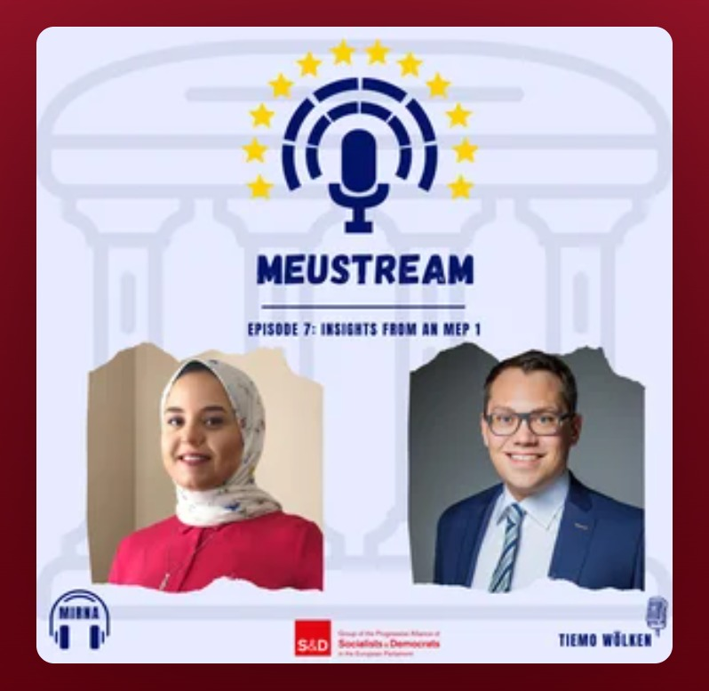
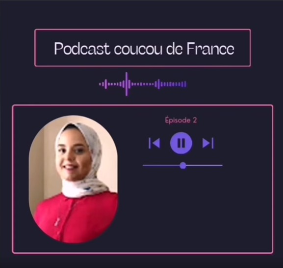

Host
MEUStream Podcast Series
Podcasting with Members of the European Parliament.
Listen on SpotifyMulticultural environments are my oxygen, multilingualism is my native language, and continuous learning is my source of nutrition. I am a hyperpolyglot who speaks nine languages, from my native Arabic to English, French and German at an advanced level, and I have been shaped by every place and culture those languages opened up to me.
That path took me from studying pharmaceutical sciences in Egypt to a joint master’s across Lisbon and Strasbourg, with a thesis planned in Münster.
My curiosity is broad but connected. I am deeply interested in science, coding, chemistry, neuroscience, bioinformatics and pharmaceutical drug development. What draws me to these fields is the places where they overlap, such as quantum chemistry, laboratory work and a well-written Python script all helping to answer the same question.
Outside the lab, I have worked on many youth projects, from leading international volunteer teams in European associations to organising events and hosting podcasts. These experiences taught me to collaborate across countries and time zones and to explain science to people who did not expect to find it interesting. I bring the same mix of curiosity, teamwork and openness to everything I do.
I am an Erasmus Mundus Joint Master’s student in Chemoinformatics+ at NOVA University Lisbon and the University of Strasbourg, specialising in organic chemistry. I hold a BSc in Pharmaceutical Sciences from Mansoura University (GPA 3.96/4.00, ranked 7th among 850 students), and my training combines quantum chemistry, DFT calculations and physical organic chemistry with applied machine learning.
My research centres on QSAR/QSPR modelling and the question of how molecular representation shapes what a model can learn. At LAQV-REQUIMTE (NOVA FCT) I develop machine-learning models for molecular activity, compare descriptors and fingerprints, analyse chemical space, and use validation and applicability-domain analysis to establish where predictions can be trusted. I complement this with virtual screening, molecular docking and reproducible Python/RDKit workflows. In parallel, I synthesised and characterised pharmaceutical ionic liquids (NMR, ATR-FTIR, DSC), which grounds my computational work in measurable physicochemical behaviour.
I have applied these skills in independent projects, including a solubility-prediction study on roughly 9,980 compounds, presented as a poster at the 2026 Strasbourg Summer School on Chemoinformatics, and in Kaggle competitions on photostability and mass-spectra-based structure prediction. I also work as a teaching and research assistant in analytical chemistry at Mansoura University and have led international volunteer teams in European associations. My master’s thesis on computational fragment screening is planned at the University of Münster, and I aim to pursue a PhD in data-efficient machine learning and DFT for the design of sustainable catalytic materials.
NOVA University Lisbon & University of Strasbourg · Lisbon–Strasbourg track · Specialised in Organic Chemistry
Mansoura University, Egypt
LAQV-REQUIMTE, NOVA FCT
LAQV-REQUIMTE, NOVA FCT
University of Münster, Germany
2026 Strasbourg Summer School on Chemoinformatics
I am currently working on two manuscripts.
Faculty of Pharmaceutical Sciences, Mansoura University, Egypt
Bringing Europeans Together Association (BETA Europe) · Remote, Belgium
Model European Union Strasbourg (MEUS), BETA France · Remote, France
Oath for Sustainability Network, Climate and Health Research Lab · Remote, Africa

Podcasting with Members of the European Parliament.
Listen on Spotify
My Journey with the French Language, Episode II.
Listen on FacebookTolkien Course, Episode XIX. Featured on Apple Podcasts.
Listen on Apple PodcastsCoursework knowledge: HRMS, HPLC, X-ray crystallography.
Third place
First place
Strasbourg Summer School on Chemoinformatics
.card block here, or link a Markdown/Jekyll blog.+351 963 328 733